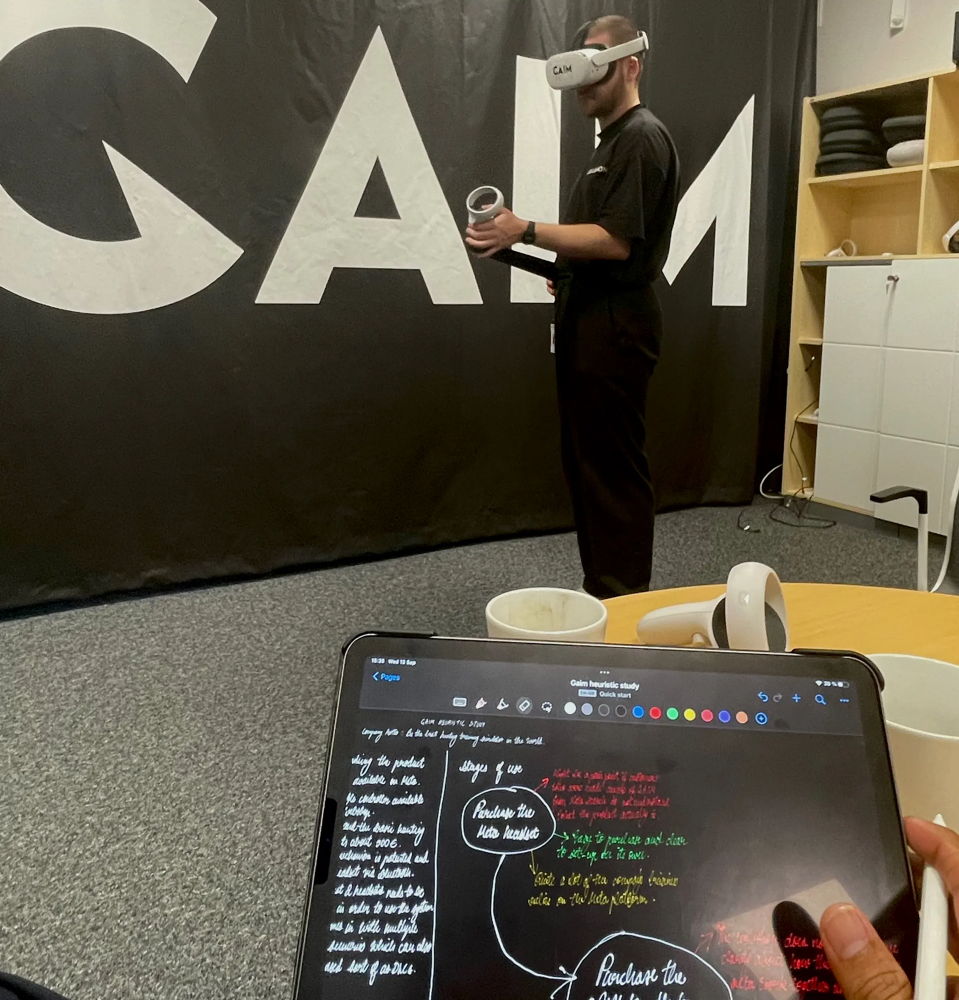
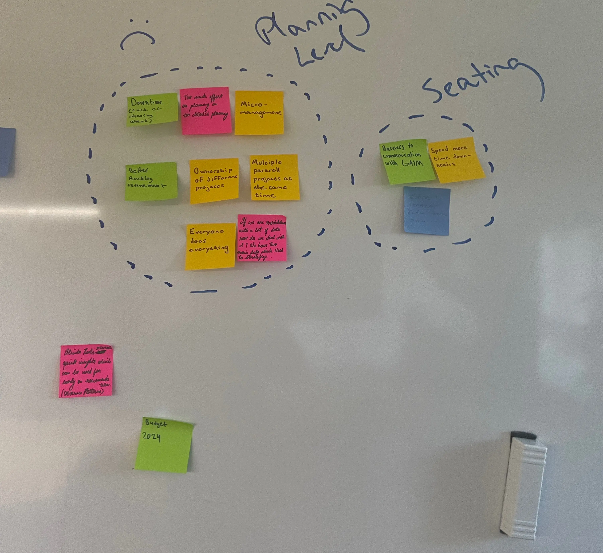
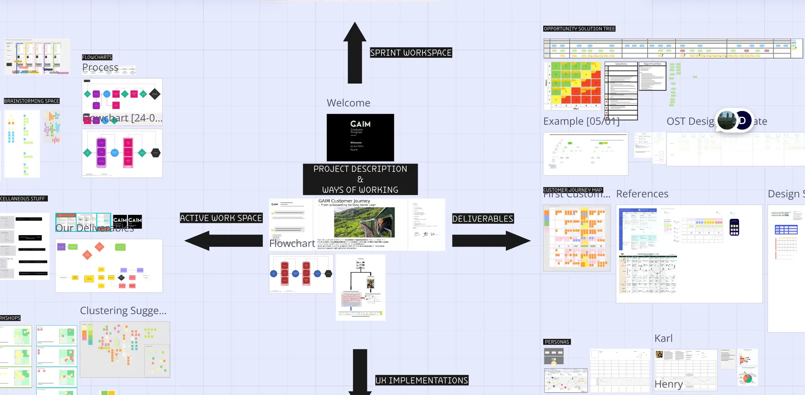
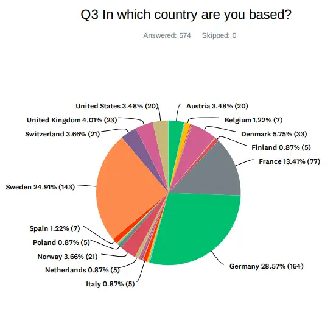
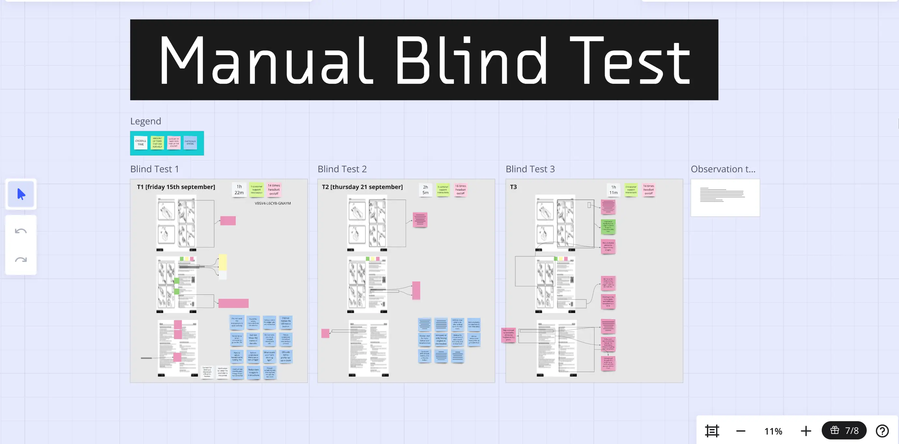
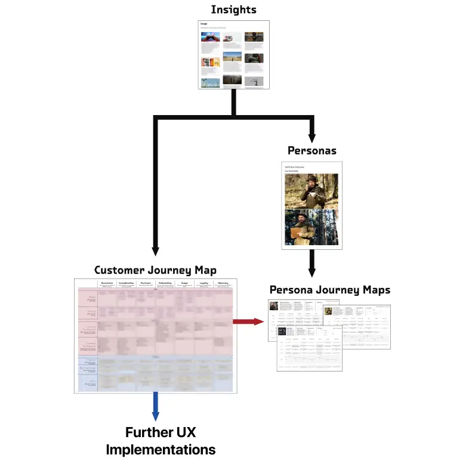
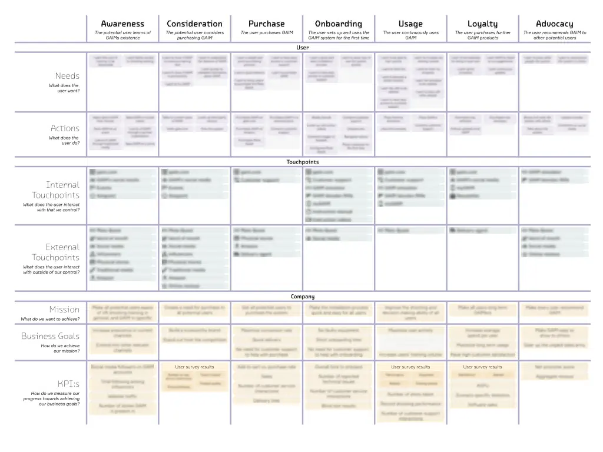
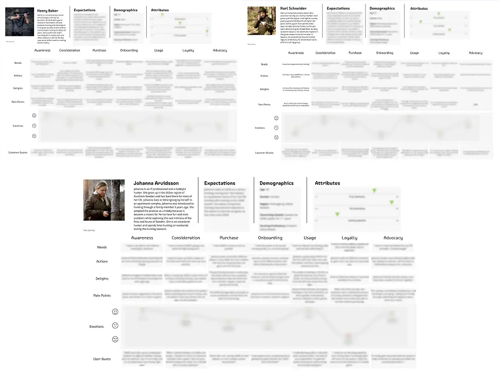

At GAIM
Immersive Technology AB in Malmö,
Sweden, I was part of a team of three
UX researchers tasked with understanding and visualizing user
behavior among GAIM's hunting simulator userbase.
Our goal was to
explore and document the entire customer journey
and identify
opportunities to guide product decisions for
improving the customer experience.
The project focused primarily on
Qualitative Insights, gathered through
extensive interviews and observational
studies. These insights informed
a series of strategic UX Deliverables
that have since helped guide product
decisions across the organization, from development
to sales and marketing.
My Role
Planning and executing the data gathering phase which included Interviews, Blind Tests(Contextual Inquiry) & Surveys, Leading the development of User Personas, Collaborating on Customer Journey Mapping, Conducting workshops with Marketing & Development teams to deliver key UX Insights
Tools
Miro, Figma, Dovetail, Jira, SurveyMonkey.
Team Members and Co-ordinators
01 / Understanding GAIM
We kicked off the project by conducting a few Pilot Interviews to test and refine a Questionnaire for the main study.

Getting to know the product while empathizing with our customers was one of the goals we had during this initial phase. Hence, each team member spent many hours using the software and the tangible controller, taking notes of the many observations we came across.

02 / UX Research
With a structured Questionnaire in-hand and a good understanding of how the product works, we moved ahead with gathering data through In-Depth Interviews. We gathered participants through sending out requests on GAIM’s monthly newsletter and then shortlisting candidates to have a diverse dataset.

We also ran Blind Tests, observing their interactions with the system through their onboarding and first-use. To supplement our Qualitative work, we conducted surveys, recruiting participants through GAIMS's Newsletter, which helped us triangulate our findings during the analysis.


After a rigorous Thematic Analysis phase was completed on Dovetail, the Insights that emerged were used to create a range of UX deliverables.
03 / Insights & Customer Journey Map
The Insights acted as a resource bank for the themes that emerged during the analysis. They were created, stored and presented from Dovetail itself. These Insights would then be used as a resource for Workshops and Brainstorming sessions across teams.
A quote presented in the Insights - “When I look down the scope, I have to be sure of making the hit. What’s necessary for that, is practice."

The Customer Journey Map (CJM) was created as an end-to-end visualization of user interaction across all product touchpoints and phases. This was designed to be a living map that changes as the product evolves.

04 / User Personas
The User Personas were the final deliverable from the research that were to be used by teams at GAIM as a tool for truly empathizing with their customers. It was split into three documents.
- Persona Foundation Document: Core patterns and attributes that shaped our personas. This document acted as a database to collect all user data that emerged from the Insights.
- Three User Personas: Fictional characters based on the data in the PFD, referred to by the teams to empathise with real users.
- Persona Journey Maps: Detailed mapping of each Persona’s experience across the seven phases of the CJM.
